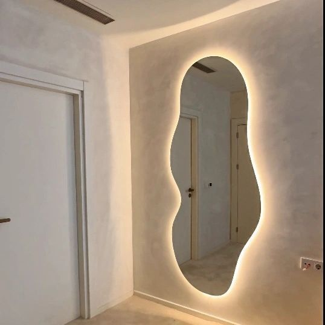

جدران ستائرية
أنظمة المغلفات التي تدعم الارتفاعات الزجاجية الأكبر والحضور المعماري الأقوى.
أنظمة الألمنيوم المعمارية في الأردن
تقدم شركة Glassology جدران ستائرية، ونوافذ، وأبواب، وكوات، وواجهات متاجر، وحلول تكسية مصممة لتحقيق أداء أقوى، وتفاصيل أنظف، وعرض متميز للمشروع.


تضع هذه الصفحة المقصودة شركة Glassology كشريك متميز لأنظمة الألومنيوم للمطورين والمهندسين المعماريين والاستشاريين والمقاولين والعملاء المباشرين. فهو يجمع بين وضوح الخدمة والإثبات البصري وكتل CTA التي تركز على الاستفسار لتحويل المزيد من حركة البحث إلى فرص حقيقية.
تمت كتابة كل كتلة أدناه لدعم أهمية تحسين محركات البحث وتسهيل عملية اتخاذ القرار للمشتري.
أنظمة المغلفات التي تدعم الارتفاعات الزجاجية الأكبر والحضور المعماري الأقوى.
تكوينات منزلقة ومفصلية ومخصصة مصممة للتهوية والمتانة والتفاصيل.
واجهات متميزة لمتاجر التجزئة والمكاتب توفر رؤية أكثر وضوحًا ونقاط وصول أكثر صقلًا.
حلول خارجية وتكسية مميزة تعمل على تحسين الاستمرارية وجودة التشطيب والمظهر العصري.
عناصر تحكم معمارية تساعد في التظليل وتدفق الهواء والخصوصية وإيقاع الواجهة.
تصنيع مخصص للفتحات الخاصة، والتفاصيل الخاصة بالمشروع، والمتطلبات غير القياسية.
بالنسبة لأنظمة الألمنيوم، يحتاج المشترون إلى أكثر من مجرد معرض. إنهم بحاجة إلى الثقة في أنه سيتم التعامل مع ملفات التعريف والواجهات والمحاذاة وجودة النهاية بشكل صحيح. ولهذا السبب تمت كتابة هذه الصفحة لتوجيه العملاء المهتمين بالتصميم والأداء.
أرسلها مباشرة واحصل على توجيه أسرع بشأن خيارات النظام، وإنهاء التوصيات، والخطوات التالية.
غالبًا ما يتم الحكم على مشاريع الألمنيوم مرتين: أولاً من خلال أداءها، ثم من خلال مدى دقتها بمجرد تركيبها. تجمع الأنظمة الأكثر نجاحًا بين الهيكل والمحاذاة والحماية من الطقس والتشطيب المعماري الحاد.

يعمل قسم العمليات على تعزيز الثقة من خلال إظهار أن أنظمة الألومنيوم يتم التعامل معها كحزم معمارية منسقة، وليست منتجات معزولة.
نقوم بمراجعة الارتفاعات والأبعاد وتوقعات الأداء والهدف البصري قبل اقتراح الأنظمة.
تتماشى الأقسام وأنواع الفتح والواجهات وشروط الدعم مع حقائق المشروع.
يتم إعداد الملفات الشخصية والتشطيبات والملحقات وتفاصيل النظام لإنتاج دقيق.
يركز التنفيذ على المحاذاة والختم وجودة التشطيب وتنسيق الموقع عبر البناء.
يعمل الارتباط المتقاطع على تقوية التنقل وتحسين بنية تحسين محركات البحث (SEO) وتسهيل اكتشاف الخدمات التكميلية للزائرين.
تدعم مجموعة الأسئلة الشائعة هذه رؤية البحث الطويل وتزيل الاحتكاك قبل الاتصال.
نعم. تتعامل شركة Glassology مع جدران ستائر الألمنيوم وأنظمة الواجهات ذات الصلة للمشاريع التجارية والمعمارية في الأردن.
نعم. نقوم بتصميم واجهات المتاجر والنوافذ والأبواب وفقًا للأبعاد والاستخدام والتشطيبات والأهداف المرئية.
نعم. تعد تكسية الألومنيوم، والفتحات، وعناصر تظليل الشمس جزءًا من نطاق أنظمة الألومنيوم لدينا.
يرجى إرسال الرسومات والارتفاعات والأحجام التقريبية والموقع وتفضيلات التشطيب وأي متطلبات أداء إذا كانت متوفرة.
تم إنشاء قسم الإغلاق هذا عمدًا ليكون بمثابة نقطة ارتكاز التحويل لكل صفحة خدمة. فهو يجمع بين الهاتف وWhatsApp ونموذج استفسار خفيف الوزن خاص بالصفحة.
شكرًا لك. سيقوم فريق علم الزجاج بمراجعة استفسارك حول أنظمة الألمنيوم والرد في أسرع وقت ممكن.